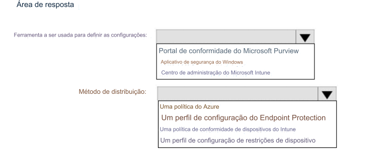

206- PONTO DE ACESSO
Sua rede contém um domínio do Active Directory. O Active Directory é sincronizado com o Azure AD.
Existem 500 computadores associados ao domínio do Active Directory que executam o Windows 10 e estão inscritos
no Microsoft Intune.
Você planeja implementar o Microsoft Defender Exploit Guard.
Você precisa criar uma política personalizada do Microsoft Defender Exploit Guard e, em seguida, distribuir a política para todos
os computadores.
O que você deveria fazer?
Para responder, selecione as opções apropriadas na área de resposta.
NOTA: Cada seleção correta vale um ponto.
